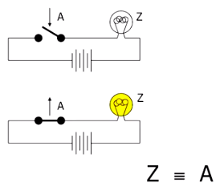
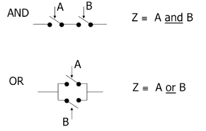
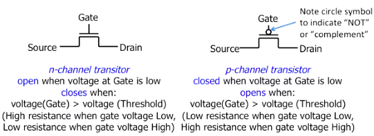
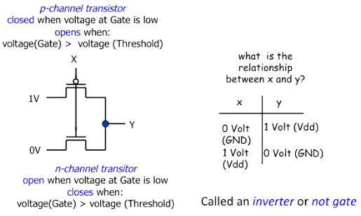
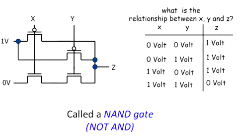

Transistors¶
We start with a very simple logic circuit called a switch.

When the switch’s gate is closed (A = 1), the light is on (Z = 1). When the switch’s gate is open (A = 0), the light is off (Z = 0). Note that the terminology can be a little confusing, because the gate being closed means that the voltage is allowed to flow through the circuit rather than being blocked.
We can compose switches into logic gates. The image below shows how to build an AND gate and an OR gate.

A transistor is a switch where its gate can be opened and closed electronically. It has two inputs: the source and the gate. And one output: the drain. The transistor has the same logic as an AND gate in that the voltage at both the source and the gate have to be high in order for the voltage at the drain to be high.1 The voltage is classified as high (1) if it exceeds some threshold between the “ground” voltage (0V) and the voltage from the power supply (1V). Otherwise, the voltage is classified as low (0). This thresholding reduces noise and is one of the main reasons for using digital rather than analog systems to build computers.
Modern computers use Complementary Metal-Oxide Semiconductor (CMOS) transistors. The Complementary part is about pairing two types of transistors: n-channel transistors and p-channel transistors. What I’ve described in the previous paragraph is an n-channel transistor. The gate for an n-channel transistor is closed when voltage at the gate is high and the gate for a p-channel transistor is closed when voltage at the gate is low. N-channel transistors pass weak 1s and strong 0s and p-channel transistors do the opposite, so we use both to always pass strong values.

Here is an example of a NOT gate using CMOS transistors:

Note that the drain output comes from the power supply or the ground rather than the gate inputs, which reduces noise.
Here is an example of a NAND gate:

Sources¶
UC Berkeley, CS61C, Spring 2015
- 1
However, we still build an AND gate out of multiple transistors. See https://www.quora.com/Is-a-transistor-basically-an-AND-gate